The rendering pipeline, recap
We already have a model made of polygons. Those polygons are a flat data structure that the vertex shader processes to figure out where they sit on the display. What we glossed over before was the bit in the middle — what does the rasteriser actually do when it hands variables from the vertex shader to the fragment shader? Rasterisation maps geometry to pixel values; this chapter is how it gets there.
3D vertices
points = [0,0,0, 1,0,0, 0,1,0]
Vertex shader
sends out gl_Position
Rasterisation
which pixels are covered?
Fragment shader
sends out gl_FragColor
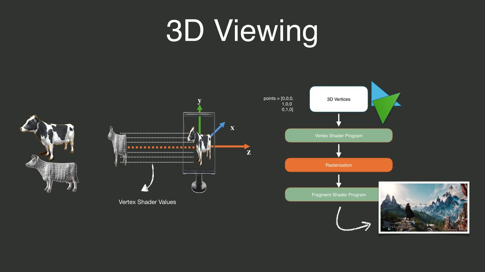
Rasterising a triangle
Take the cow and rasterise it. This happens before colouring, so think wireframe for now. A real photo isn't 10×10 pixels — it's more like 500×500 — so zoom in until the grid looks coarse enough to reason about. Eventually you reach a single triangle: three vertices, three edges.
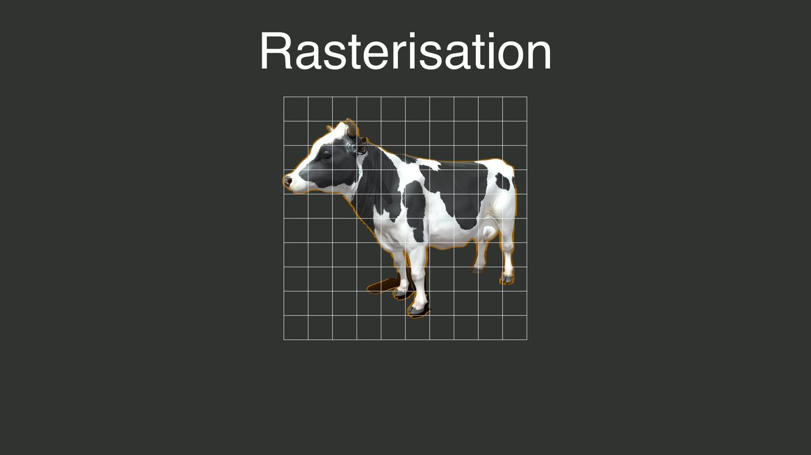
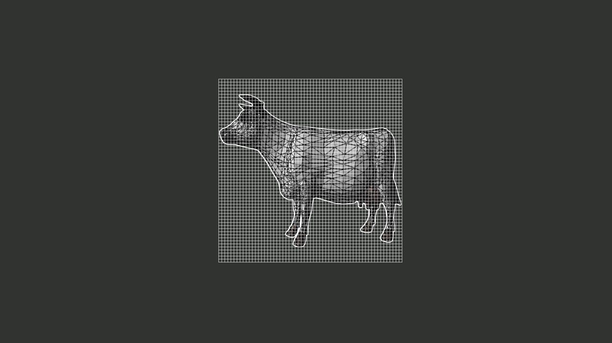
The triangle isn't shaded yet — treat it as empty. What we need to know is: which pixels does this triangle cover? Then we can tell the fragment shader what to do with the pixels that represent our polygon.
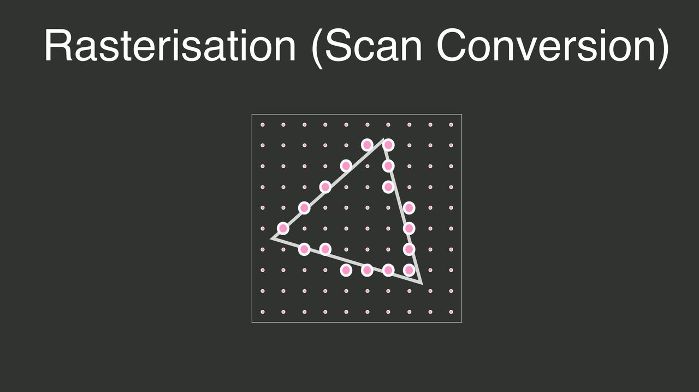
Bresenham's line algorithm (1965)
Simplify to a single edge. We have a 2D grid, so we can use Cartesian coordinates. One of the first solutions, by Bresenham in 1965, is delightfully simple. The line equation is y = mx + b, where m is the slope and b the y-intercept. The slope comes straight from the vertices:
x and y are integers — they represent pixels. As we step horizontally, x changes by one pixel and we round y to the nearest pixel that matches the gradient. The catch: that m * x is usually a floating-point multiply (and computing m can be a float division). Bresenham can be optimised with integer-only tricks, but the headline is that it's simple arithmetic that runs fast on both CPU and GPU — perfect if you only want wireframes.
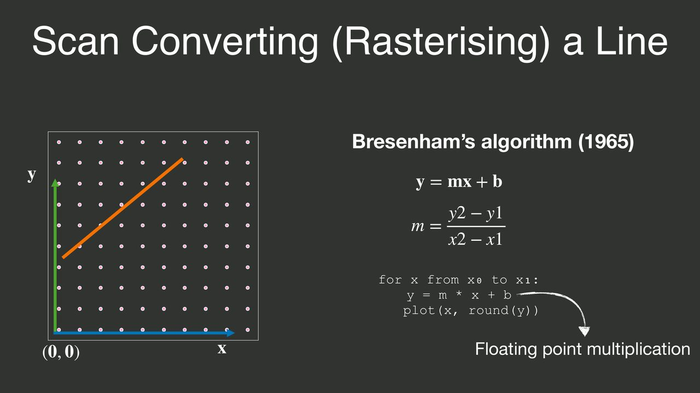
The sweep-line algorithm
Named after the scanline behaviour of an old cathode-ray TV: start at the top vertex and sweep down one horizontal line at a time, finding which pixels lie between the triangle's edges on each line.
- Compute the edge slopes using Bresenham's algorithm.
- Find where each horizontal scanline intercepts the edges.
- Because we know the gradient, we can predict where the next scanline's spans (px and qx) begin — an optimisation between scanlines.
- Fill in the pixels between the two edge intercepts.
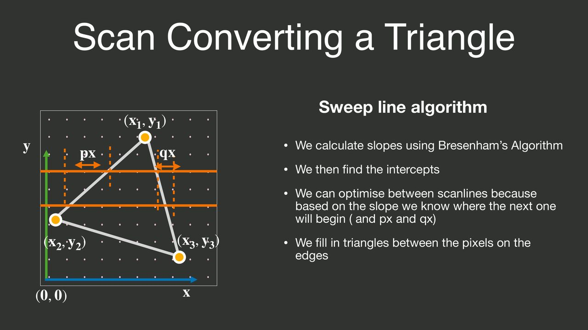
Barycentric coordinates
What if a single arithmetic formula could tell us about any point p — no slopes, no line-mapping? Any point is a weighted blend of the three vertices A, B, C:
Think of α, β, γ as weights pulling the point toward each vertex. Set α=0, β=0, γ=1 and p sits exactly on C. Set β=γ=0.5 and p lands at the midpoint of BC. If a weight approaches 1, p is dragged toward that vertex. And crucially — if any weight is negative or the sum exceeds 1, the point is outside the triangle. So the same formula does inside/outside testing for free.
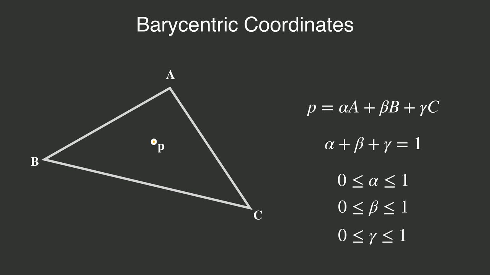
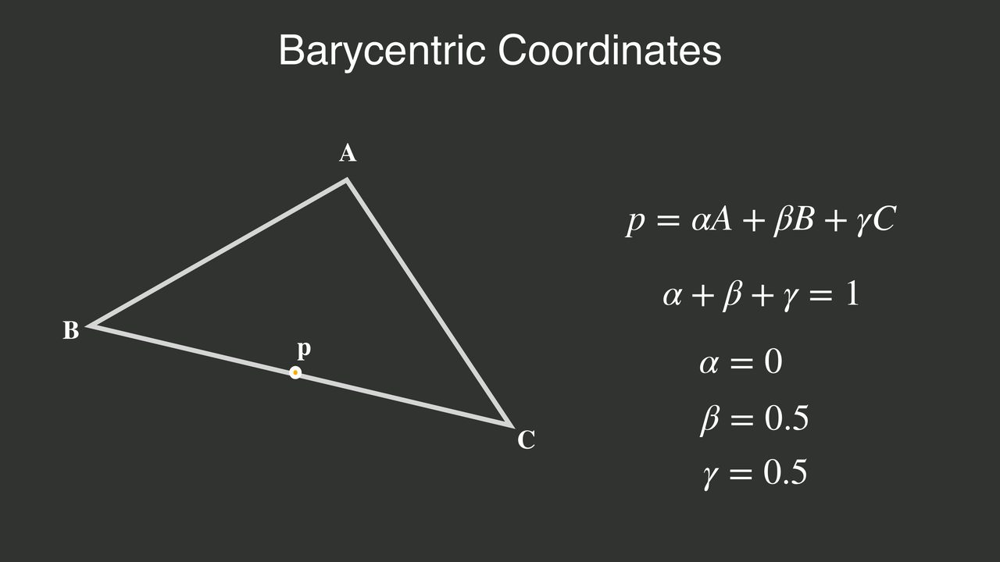
How do we actually compute the weights?
Points inside the triangle map to area. The area of a triangle is ½ · base · height (the perpendicular height h from a vertex to the opposite edge). Drop a point P onto the height segment of A:
If P sits on BC, triangle PBC collapses → its area is 0 → and that's exactly where α = 0. If P = A, the two areas are equal → α = 1. For an arbitrary point, α is the ratio of the heights, which (same base ‖BC‖) is just the ratio of the areas:
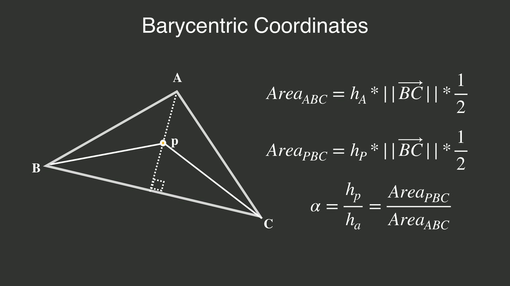
Split the triangle with P into three sub-triangles of area a₀, a₁, a₂. They sum to the full area A. Divide through by A and each ratio is one of the weights — and they sum to 1, exactly the property we required:
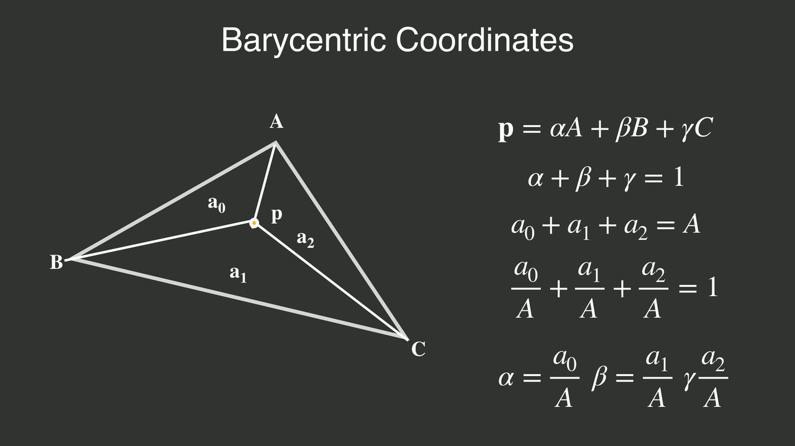
Interpolating between vertices
Barycentric weights don't just test coverage — they let us interpolate. Every varying attribute the vertex shader passes to the fragment shader (colour, normals, texture coordinates…) is blended across the triangle using the pixel's barycentric weights.
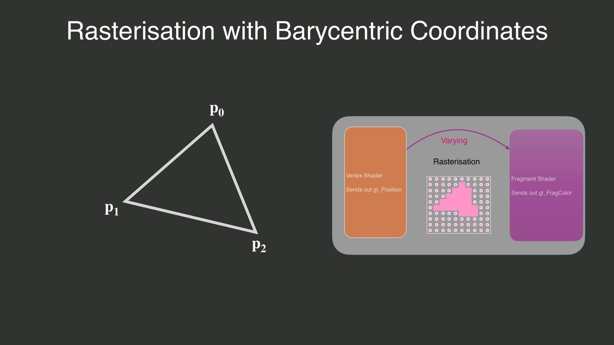
Picture a colour defined at each vertex (c₀, c₁, c₂). During rasterisation the colour at any interior pixel is the barycentric blend of the three — closer to the blue vertex, the bluer it gets, because that weight dominates there.
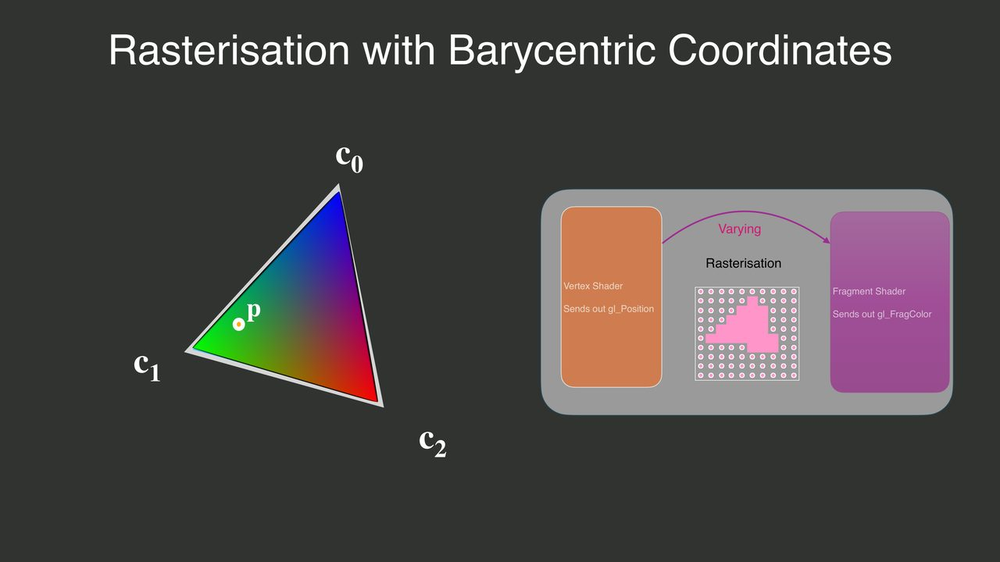
Alpha blending
We can now draw triangles and colour them. But what if the cow stands in front of a flat 2D background image — and what if the cow is transparent? What colour do we draw where they overlap? The answer is alpha blending.
Remember RGB pixels? There's a fourth channel I didn't mention: the alpha (A) channel — the pixel's opacity. It tells us how transparent each pixel is, in both the foreground and the background.
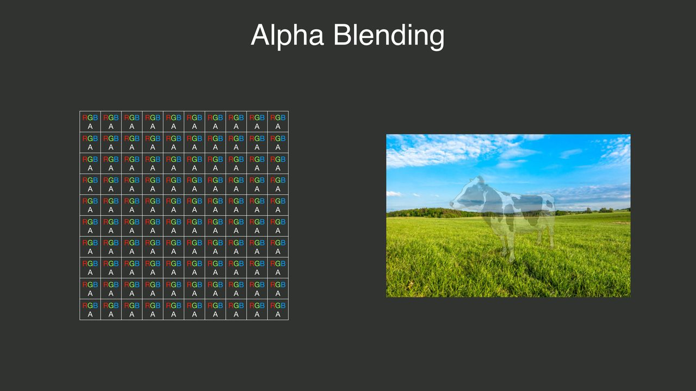
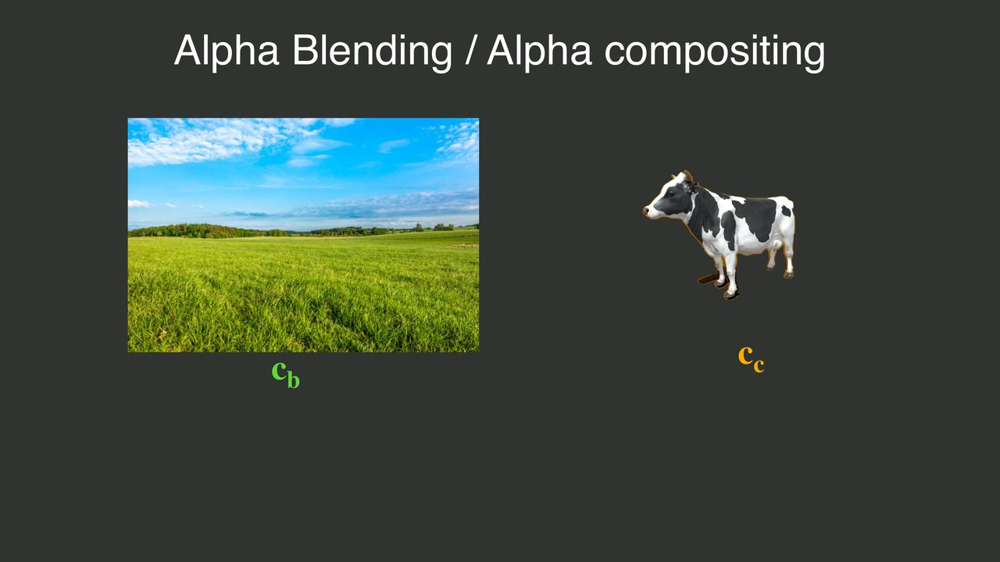
Naïvely adding the two colours makes the cow glow radioactively. Naïvely multiplying the background by zero deletes it. The right tool is interpolation on alpha:
- αc = 0 → cow fully transparent, only background shows.
- αc = 0.5 → 50% cow + 50% background where they overlap.
- αc = 1 → cow fully opaque, hides the background.
When the background is also transparent
If the background has its own alpha αb, we form a composite alpha and divide by it to keep the scene's overall intensity constant (and the alpha clamped, not blown out):
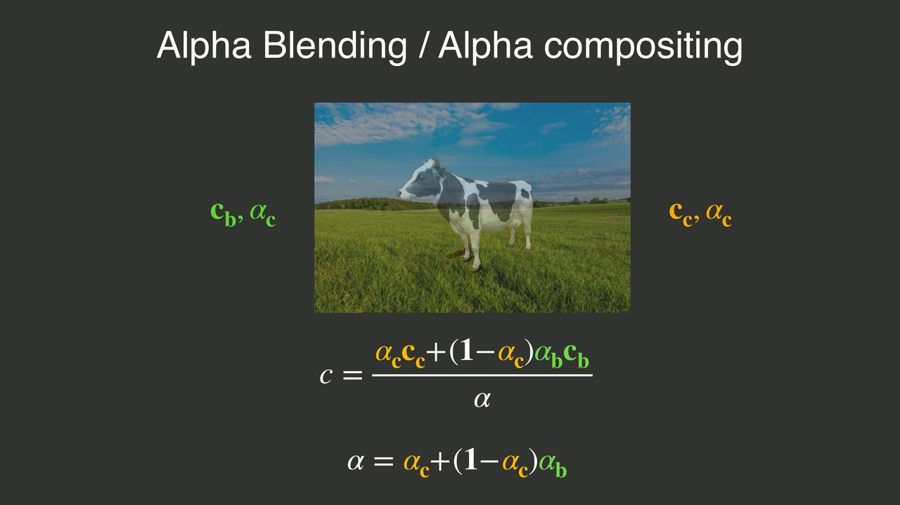
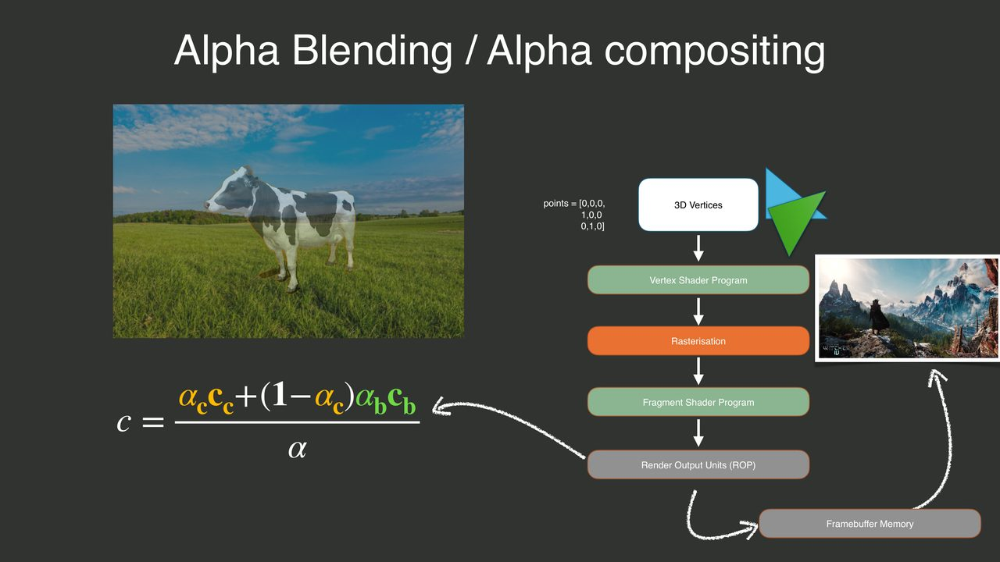
Additive & subtractive blending
Alpha blending is the traditional mode, but the ROP can be told to compute others. Two common alternatives:
Additive blending
We only care about the foreground's alpha. Black parts of the cow (RGB = 0) contribute nothing, so the background shows through. Bright parts push channels above 1 — but RGBA is clamped to [0,1], so they saturate and stop getting brighter (you can't go beyond white (1,1,1) on the additive colour diagram).
Subtractive blending
Subtract the values and take the absolute value. It generally darkens the image — white parts become transparent, darker colours dominate. It's how you get that cool negative-photo effect.
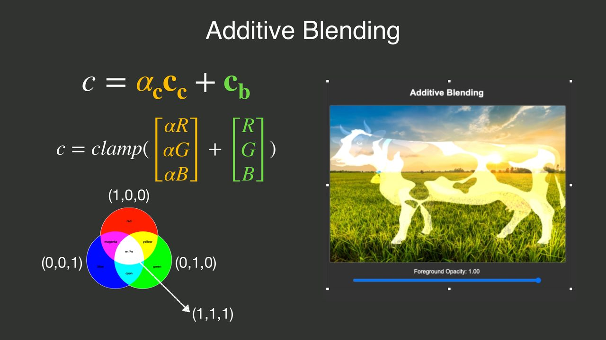
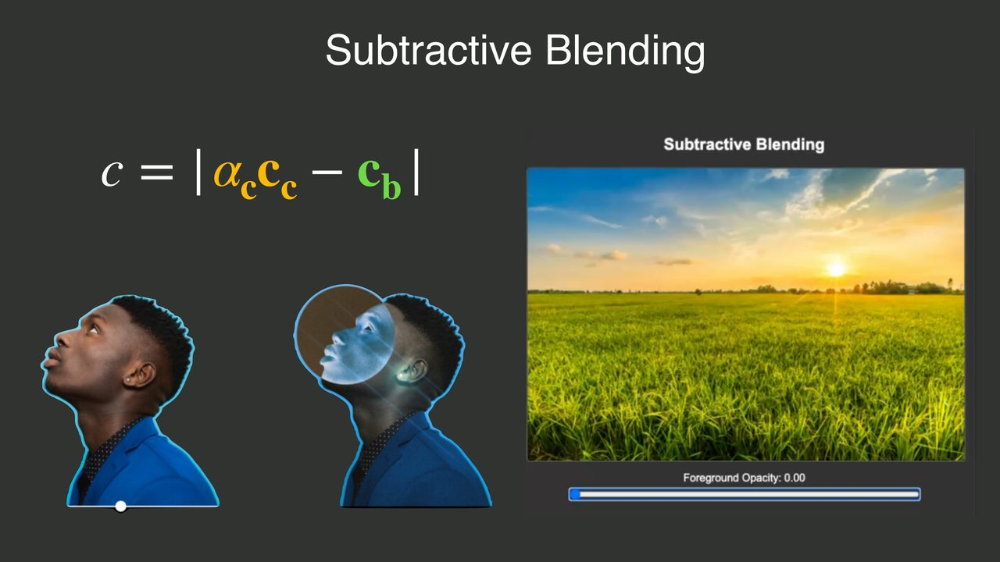
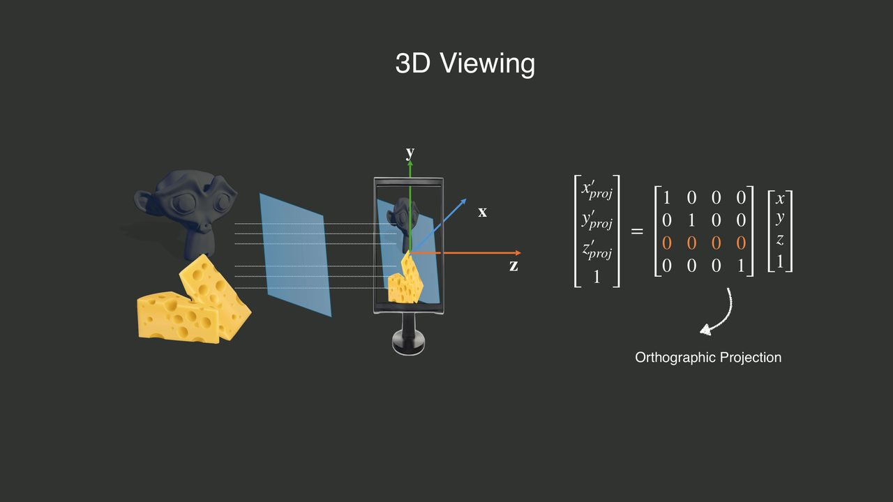
The one-screen summary
Rasterise
aka scan conversion — decide which pixel samples a triangle covers.
Bresenham
Fast integer-ish line drawing (1965). Edges only, no interior.
Sweep line
Fill spans scanline-by-scanline. Correct but hard to parallelise.
Barycentric
p = αA+βB+γC, weights sum to 1. Coverage + interpolation, per-pixel parallel.
Varyings
Per-vertex data interpolated to fragments using barycentric weights.
Alpha blend
c = αccc + (1−αc)cb. Composite when both are transparent.
Additive
c = clamp(αccc + cb). Bright channels saturate at white.
Subtractive
c = |αccc − cb|. Negative-photo darkening.
Quiz
Drawn from the course's Computer Graphics question banks. Click an answer to check it.
Past-paper questions (Section B)
Real COMP27112 exam questions that touch this chapter — rasterisation order, tessellation, triangle normals, and normal/colour interpolation. Click to reveal a model answer.
▸2017 · Q6 Scan-conversion & depth ordering 3 marks
Figure 1 shows part of a screen with a grey triangle ABC and a red triangle DEF. ABC is scan-converted first; DEF is scan-converted second and is closer to the camera. Referring to two pixels P and Q, explain how scan conversion ensures ABC and DEF are displayed correctly.
As each triangle is scan-converted, every covered pixel gets a depth (z) value. The Z-buffer stores the closest z seen so far per pixel. For a pixel covered only by one triangle (say P, only ABC), it simply takes ABC's colour. For a pixel covered by both (Q), DEF's fragment is compared against the stored depth: because DEF is nearer, its z passes the depth test and it overwrites ABC's colour and depth. Drawing order doesn't matter — the per-pixel depth comparison guarantees the nearer surface wins, solving the hidden-surface problem.
▸2017 · Q8 Computing a triangle's normal 2 marks
Given a triangle ABC, explain how to compute the triangle's normal vector.
Form two edge vectors from a shared vertex, e.g. e₁ = B − A and e₂ = C − A. Take their cross product N = e₁ × e₂, which is perpendicular to the triangle's plane. Normalise it (divide by its magnitude) to get a unit normal. The winding order (CW vs CCW) determines which way the normal points.
▸2018 · Q5 Tessellation 2 marks
Describe what is meant by tessellation, and when it is necessary.
Tessellation is splitting a polygon into a set of simpler (convex) polygons — in practice, triangles. It's necessary because the GPU pipeline rasterises triangles: any complex, concave, or non-planar polygon must be broken into triangles first, since a triangle is always planar, convex, and has a well-defined normal, making rasterisation unambiguous.
▸2018 · Q6 Display-space hidden-surface removal 3 marks
Describe a hidden surface removal technique that operates in display-space.
The Z-buffer (depth-buffer) algorithm. Alongside the colour framebuffer keep a depth buffer initialised to the far value. As each triangle is rasterised, interpolate the z of every covered fragment. If a fragment's z is nearer than the stored depth, write its colour and update the depth; otherwise discard it. It works per-pixel in display/screen space, is order-independent, and resolves arbitrary intersecting geometry.
▸2019 · Q24 Normal / colour interpolation across a triangle 4 marks
Figure 3 shows a triangle T0 in a mesh. Explain how normal-vector interpolation would render T0, and how the colours of pixels a–h between points P and Q would be computed.
Each vertex of T0 has its own normal (averaged from adjacent faces for smooth shading). During rasterisation, each interior pixel's barycentric coordinates (α, β, γ) are computed and used to interpolate the normal from the three vertex normals: Np = αN₀ + βN₁ + γN₂ (re-normalised). The fragment shader then evaluates the lighting equation per pixel using Np (Phong shading). For the row of pixels a–h between P and Q, the weights vary smoothly across the span, so each pixel gets its own interpolated normal → its own shaded colour, giving a smooth gradient rather than a flat facet.
▸2019 · Q21 Rendering a polygon with a hole 3 marks
Polygon ABCD contains a hole EFG. What process enables ABCD to be correctly rendered by OpenGL, and what is its effect?
Tessellation. OpenGL can only render simple convex triangles, so a polygon with a hole must be decomposed. The outer boundary ABCD and inner hole EFG are triangulated into a set of triangles that together fill the region between the outer edge and the hole (leaving EFG empty). The result is a fan/strip of triangles covering the solid material only, which the rasteriser can then handle correctly.